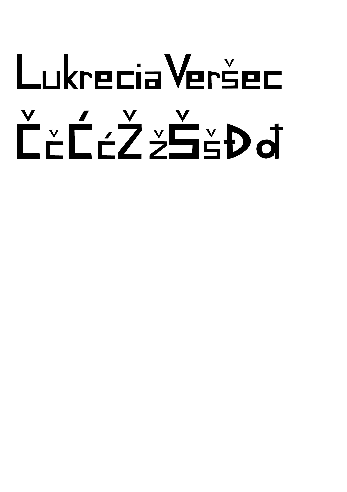
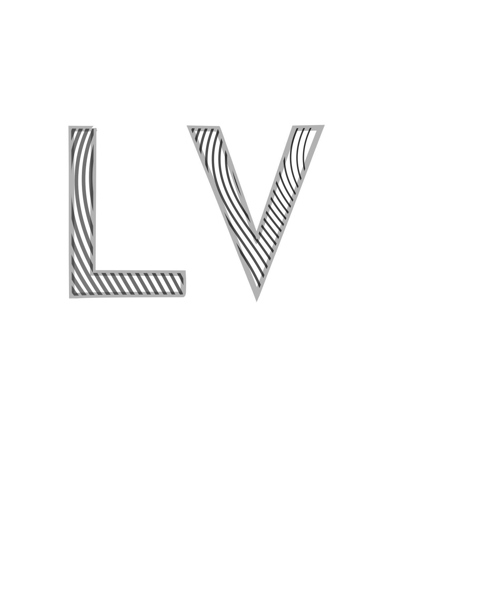
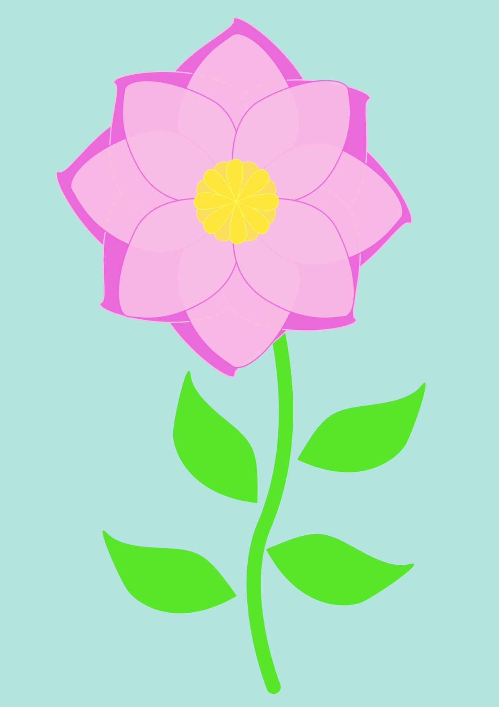
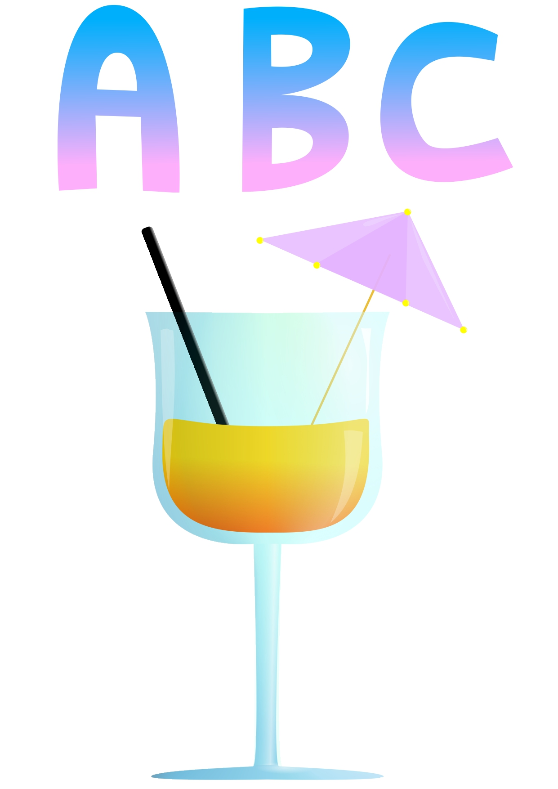
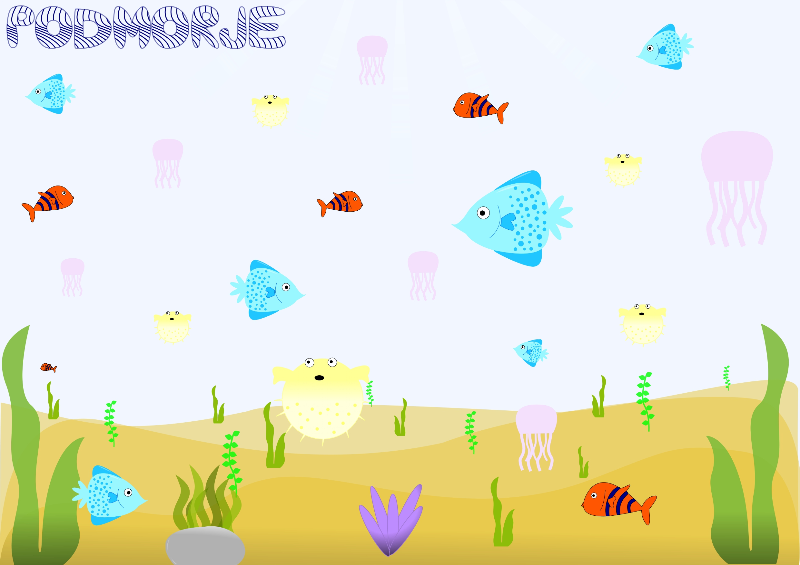
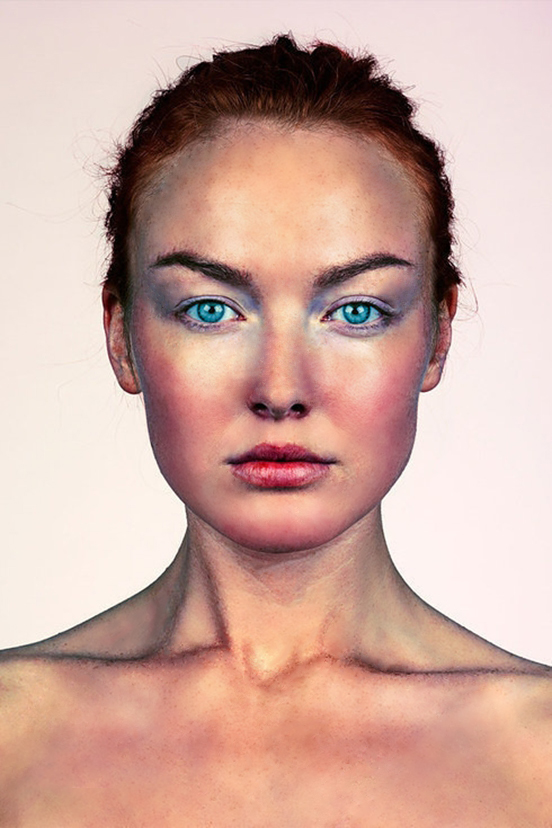
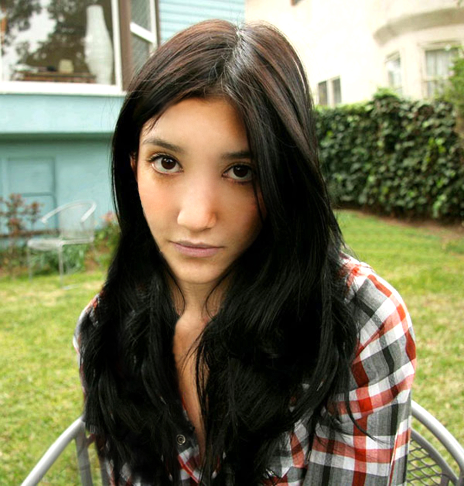
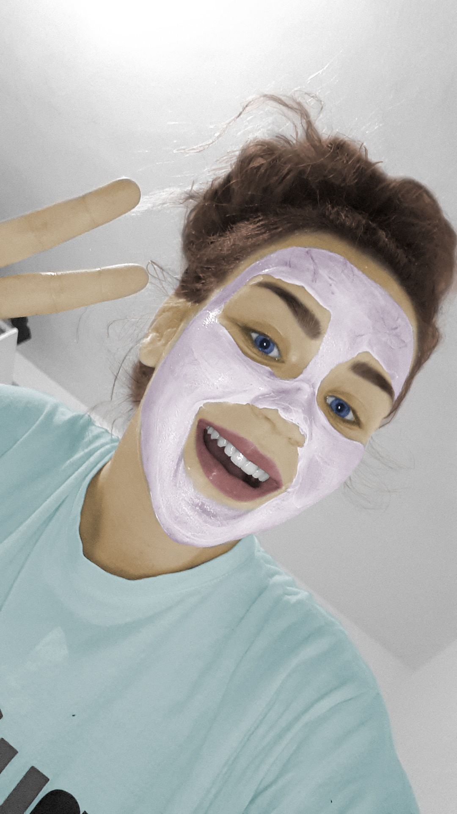
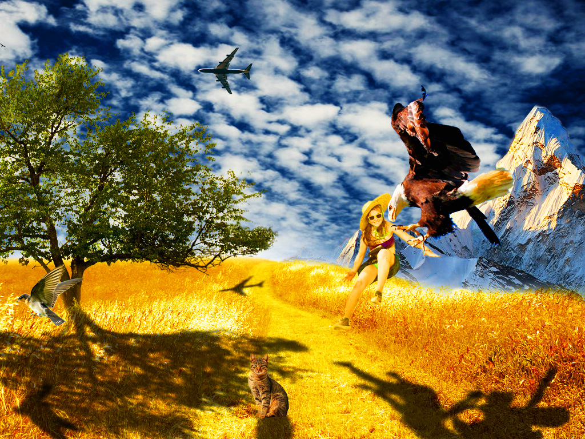
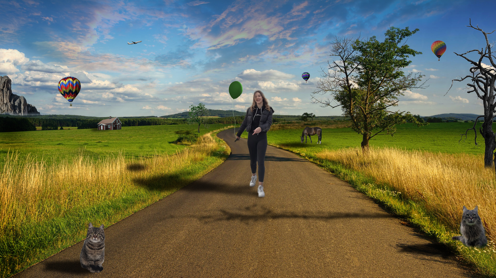

U nastavku možete vidjeti sve vježbe koje sam napravila ovaj semestar za kolegij Digitalni multimedij 1.
U prvoj vježbi zadatak je bio stvoriti vlastiti font za slova imena i prezimena, te hrvatske znakove.
U drugoj vježbi zadatak je bio crtanje Bezierovih krivulja u koordinatnom sustavu.
U trećoj vježbi zadatak je bio rad pomoću multipliciranih objekta nacrtanim alatom za crtanje Bezierovih krivulja.
U četvrtoj vježbi zadatak je bio kreirati vlastiti složeni objekt tehnikama spajanja i izrezivanja objekta, te primjenom gradijenata.
U prvom projektnom zadatku bilo je zadano spojiti sve prijašnje vježbe vezane uz vektorsku grafiku u jednu scenu.
U petoj vježbi zadatak je bio retuširanje fotografija, uklanjanje nedostataka, te lokalne i globalne korekcije boja.
 U šestoj vježbi zadatak je bio kolorirati crno-bijelu fotografiju.
U sedmoj vježbi zadatak je bio fotomontažom iskombinirati više fotografija.
U drugom projektnom zadatku bilo je zadano spojiti sve prijašnje vježbe vezane uz piksel grafiku u jednu scenu.
U osmoj vježbi zadatak je bio obrada videa uz koju bi kao rezultat dobili kinemagraf.

U devetoj vježbi zadatak je bio obrada zvuka, videa i teksta.
U desetoj vježbi zadatak je bio stvoriti multimedijski HTML dokument.
Moja prva stranica